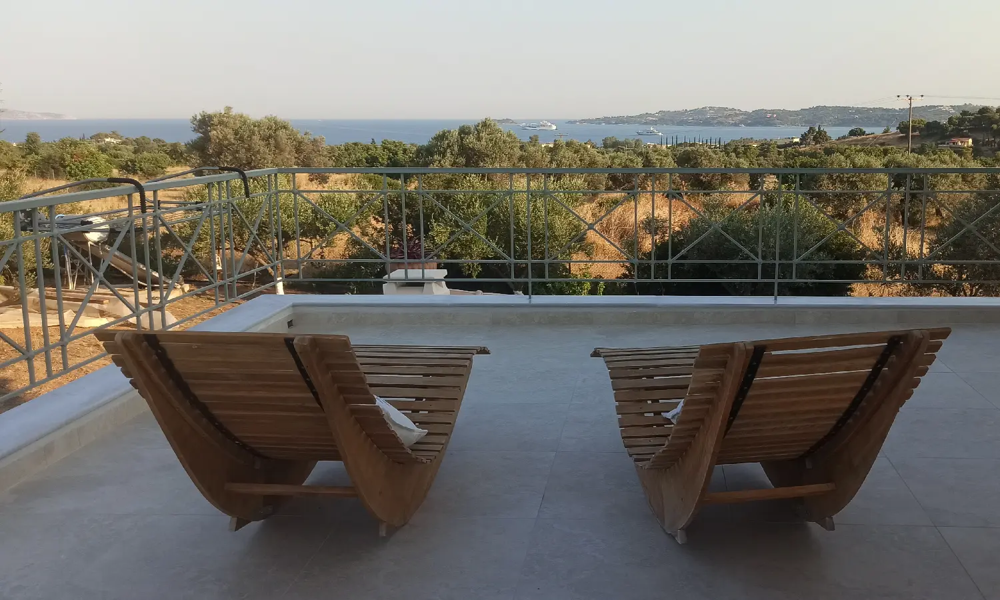

La maison
Au cœur de la verdure et des oliveraies
Un cadre privilégié et paisible où le temps s'écoule en toute sérénité.
La maison
Accueillante, chaleureuse, raffinée, authentique
La Maison Vert Amande est un lieu à l’image de ses propriétaires : accueillante, chaleureuse, raffinée et authentique. Rien de tape-à-l’œil. Un havre de paix, loin de l’agitation légendaire des îles — souvent bondées, bruyantes et animées.
Entourés de verdure et d’oliveraies, vous serez captivés par la tranquillité et la beauté sauvage des environs. L’atmosphère chaleureuse de la chambre d’hôtes, son entrée privée et ses deux très grandes vérandas offrant une vue imprenable sur la mer vous permettent de vous ressourcer et d’admirer les couchers et les levers de soleil.
Nous espérons que nos hôtes apprécieront une vie simple au sein d’un établissement respectueux de l’environnement et véritablement géré en famille. Notre priorité quotidienne est de veiller à ce que nos hôtes passent un merveilleux séjour dans une chambre confortable et spacieuse, et nous sommes entièrement à leur disposition pour y parvenir.
Notre établissement est également réputé grâce au bouche-à-oreille de nos hôtes, qui sont toujours satisfaits.

La chambre
20 m², lumineuse et rien qu’à vous
- 20 m² et très lumineuse, avec un accès direct à deux très grandes vérandas
- Entrée privée indépendante par un escalier extérieur
- Véritable lit double king-size, grande armoire et réfrigérateur
- Salle de bains privée avec douche, WC et sèche-serviettes chauffant
- Sèche-cheveux fourni · Wi-Fi gratuit · prises électriques standard
- Thé et café fournis (pas de possibilité de cuisiner)
- Chauffage en hiver · grand ventilateur de plafond · moustiquaires (pas de climatisation)
- Parking privé · non-fumeur · animaux non admis